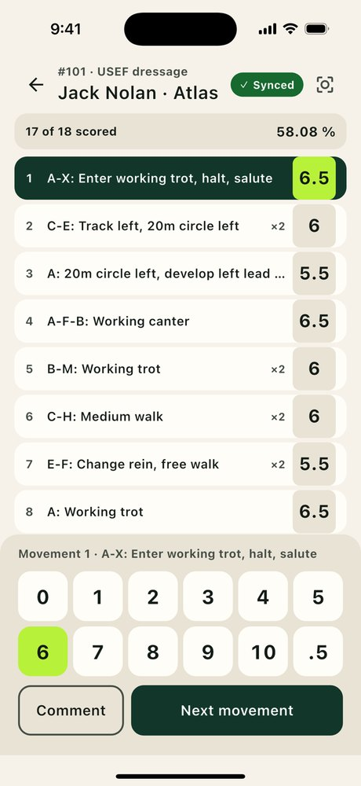
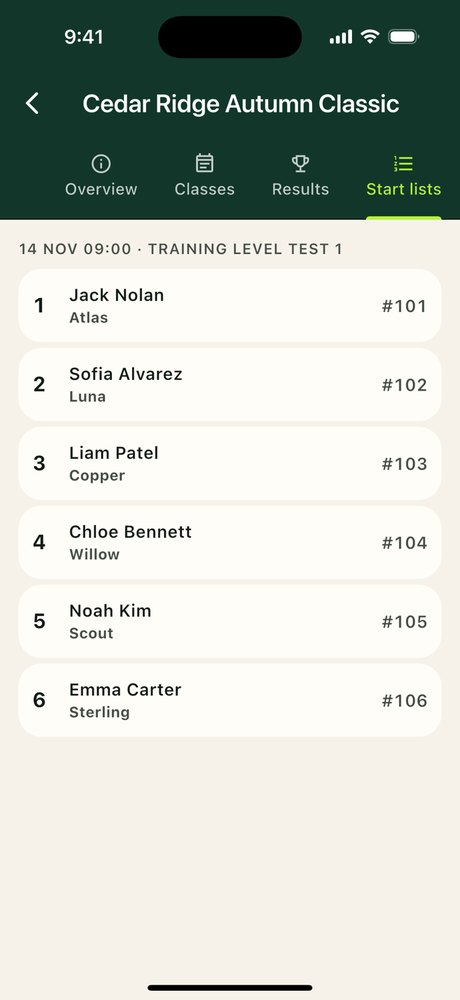
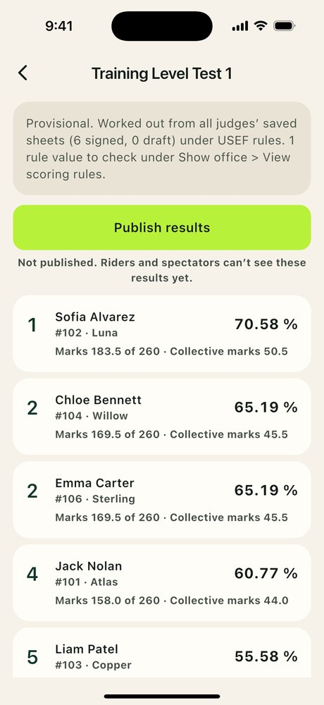
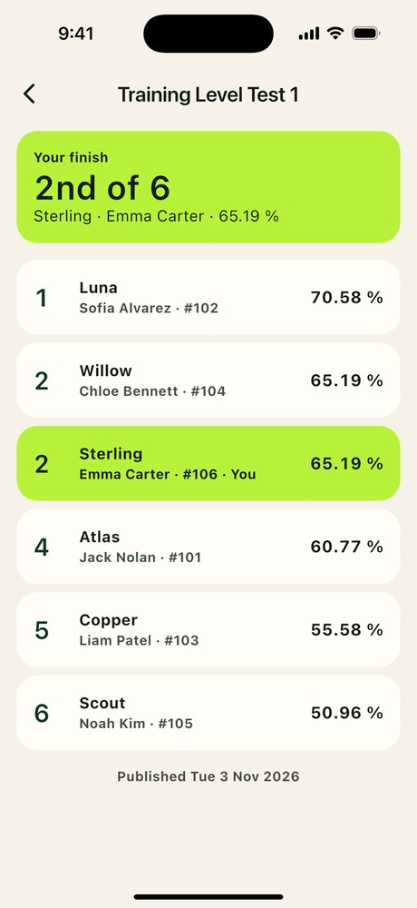

Ringside is the scoring app for horse shows. Judges mark every movement on a fast keypad, riders follow their placings, and the show office publishes official results without a spreadsheet.
See how it worksGet support
For iPhone and iPad. Built for the people who actually run a show day: organizers, judges, riders and spectators.
Tap a mark, move on. Running percentage, comments on any movement, and a signed, locked sheet when you finish.
A library of 159 dressage, eventing, working equitation, reining and more, including the 2027 USDF/USEF tests that start 1 December 2026.
Seat several judges on a class. Ringside combines their sheets and ranks the field using the discipline's own rules.
Riders enter classes in the app. The office approves entries, assigns back numbers and shares the order of go.
The office reviews provisional results, then publishes. Riders see their finish; spectators follow a leaderboard.
Share a show code. Judges and staff can be invited by email or text, and entries can be added for riders who haven't signed up yet.
A typical class, from the judge's keypad to the published leaderboard.



Every role gets the screens it needs and nothing else.